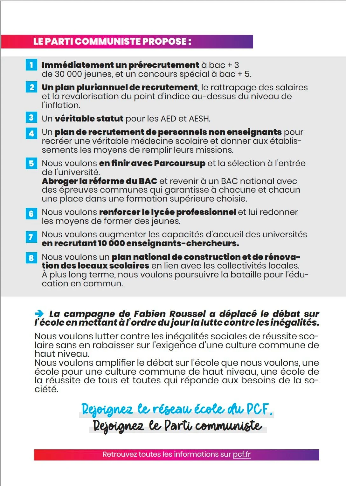

Publication d’archives
Les communistes et la rentrée scolaire
Date indiquée par Facebook · 5 septembre 2022
Texte conservé avec la publication
Contexte du dossier
Le 5 septembre, un support sur la rentrée scolaire met en avant le manque de personnels et les inégalités. Le document du PCF propose notamment le prérecrutement de jeunes, un plan d’embauches et un statut pour les accompagnants et assistants d’éducation. Il oppose à la pénurie de personnels une politique de formation et de recrutement.
Le compte diffuse ensuite une coupure de La presse locale qui rend compte d’une conférence de presse fédérale de rentrée. L’article présente des débats, des manifestations et des permanences prévues sur la santé et les questions sociales. Avec le communiqué de février et les supports d’éducation, cette coupure montre comment un programme se prolonge en rendez-vous de terrain.

Sources
Archive rouge · export Facebook · AR-0002-FB-01863
À lire aussi · Compte-rendu de la conférence de presse du PCF79 dans la presse locale du 19 septembre.